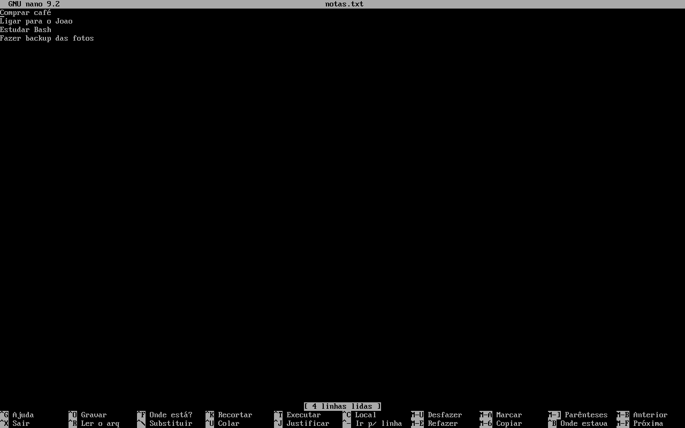

Arch nano e vim
Configurar um Arch é, quase sempre, editar um arquivo de texto: o /etc/pacman.conf, o /etc/fstab, o seu ~/.bashrc. Pelo terminal, você faz isso com um editor de texto. Esta aula ensina os dois mais comuns: o nano, simples e com os atalhos escritos na tela, e o vim, poderoso e cheio de "modos". Para só ler um arquivo, sem risco de mudar nada, a aula é cat, less, head, tail.
- Por que o Arch não vem com editor, e como saber quais você tem.
- Abrir, editar, salvar e sair do nano, e o que significa cada mensagem e cada atalho da barra de baixo.
- O mínimo do vim: os modos, i, Esc,
:w,:q,:wqe:q!(o famoso "como sair do vim"). - As variáveis
EDITOReVISUAL, e por que ovisudoe ocrontab -efalham procurando ovi. - Editar arquivos do sistema com
sudoedit.
Eles ocupam a tela inteira. As telas desta aula foram capturadas num Arch Linux real (nano 9.2 e vim 9.2), num terminal de 80 colunas por 24 linhas; pratique no seu Arch. As missões desta página treinam o que dá para fazer no simulador: descobrir os editores, configurar o EDITOR e escrever num arquivo sem editor.
O Arch não vem com editor
Esta é uma das diferenças do Arch que mais pegam quem vem do Debian ou do Ubuntu. O pacote base, o mínimo de qualquer Arch, traz o shell, os comandos de arquivos, o pacman e o systemd, mas nenhum editor de texto. Veja a lista completa de dependências dele:
$ pacman -Qi base
…
Depende de : filesystem gcc-libs glibc bash coreutils file
findutils gawk grep procps-ng sed tar gettext
pciutils psmisc shadow util-linux bzip2 gzip xz
licenses pacman archlinux-keyring systemd
systemd-sysvcompat iputils iproute2
Depend. opcionais : linux: bare metal support [instalado]
…
Nada de nano, vim ou vi. Quem quer um editor precisa pedir. Na máquina de exemplo, os dois foram pedidos de propósito no pacstrap, durante a instalação:
#> pacstrap -K /mnt base linux linux-firmware intel-ucode networkmanager sudo nano vim man-db man-pages texinfo grub efibootmgr openssh
Quais editores eu tenho?
O comando type diz se um nome é um programa e onde ele está:
$ type nano vim vi nano é /usr/bin/nano vim é /usr/bin/vim bash: type: vi: não encontrado « o vim NÃO cria o comando vi no Arch $ pacman -Qi nano | grep -E '^(Nome|Versão|Motivo)' Nome : nano Versão : 9.2-1 Motivo da instalação : Instalado explicitamente « alguém pediu: não veio com o base
Repare na terceira linha: no Arch, instalar o vim não cria o comando vi (em outras distribuições, vi é um atalho para o vim). Isso vai importar mais adiante, no visudo.
Se não houver editor nenhum
Num Arch sem editor, chamar um dá o erro de sempre de comando ausente, e a solução é instalar pelo pacman (veja pacman: o Básico). Aqui, o micro, outro editor simples, que a máquina de exemplo não tem (a instalação foi recusada com "n", só para mostrar):
$ micro notas.txt bash: micro: comando não encontrado $ sudo pacman -S micro resolvendo dependências... procurando pacotes conflitantes... Pacotes (2) hicolor-icon-theme-0.18-1 micro-2.0.15-3 Tamanho total download: 4,36 MiB Tamanho total instalado: 13,15 MiB :: Continuar a instalação? [S/n] n
Para quem começa, o mais indicado é sudo pacman -S nano.
Missão: descubra, com um único type, quais destes editores existem nesta máquina: nano, vim e vi.
nano: o editor fácil
O nano nasceu como um clone livre do pico, um editor antigo de e-mail; por isso o pacote se descreve como "Pico editor clone with enhancements". A grande vantagem dele: os atalhos principais ficam escritos na própria tela.
- nano
- O editor.
- Documentos/notas.txt
- O arquivo a abrir. Se não existir, o nano abre uma tela vazia e cria o arquivo quando você salvar.
$ nano Documentos/notas.txt
A tela do nano 9.2, a versão do Arch em outubro de 2026, em português (as linhas vazias do meio foram omitidas):
GNU nano 9.2 Documentos/notas.txt
Comprar café
Ligar para o João
Estudar Bash
Fazer backup das fotos
[ 4 linhas lidas ]
^G Ajuda ^O Gravar ^F Onde está?^K Recortar ^T Executar ^C Local
^X Sair ^R Ler o arq ^\ Substituir^U Colar ^J Justificar^/ Ir p/ linha
| Parte da tela | O que mostra |
|---|---|
| Primeira linha (barra de título) | A versão do nano e o nome do arquivo. Quando você altera algo, aparece Modificado à direita. |
| O meio | O texto. Você digita normalmente, como num bloco de notas, e anda com as setas. |
| A linha entre colchetes | A mensagem do que acabou de acontecer: [ 4 linhas lidas ] ao abrir, [ Novo arquivo ] num arquivo que não existia, [ Escritas 5 linhas ] ao salvar. |
| As duas últimas linhas | Os atalhos. O ^ quer dizer Ctrl: ^X é Ctrl+X. Num terminal mais largo aparecem mais atalhos; os que começam com M- usam Alt. |

nano 9.2 aberto no notas.txt, agora no console de texto da máquina (uma tela bem mais larga). Com mais espaço, a barra de baixo mostra também M-U Desfazer, M-E Refazer, M-A Marcar, M-6 Copiar e outros (M- = Alt). Repare que a fonte padrão do console não tem o "ã": "João" aparece como "Joao" (num terminal gráfico isso não acontece). Captura real.Passo 1: editar
Não há "modo" nenhum: o que você digita entra no texto, onde está o cursor. Desça com ↓ até a linha vazia depois da última e escreva Pagar a internet. A barra de título passa a mostrar Modificado:
GNU nano 9.2 Documentos/notas.txt Modificado Comprar café Ligar para o João Estudar Bash Fazer backup das fotos Pagar a internet
Passo 2: salvar com Ctrl+O
Ctrl+O grava o arquivo (o "O" vem de Write Out, "escrever para fora"). O nano pergunta, no rodapé, com que nome gravar, já sugerindo o atual; os atalhos de baixo mudam para as opções da gravação:
Escrever para o arquivo: Documentos/notas.txt ^G Ajuda M-D Formato DOS M-A Anexar ^Q Descartar buffer ^C Cancelar M-B Arquivo reserva M-P Pré-anexar ^T Navegar
Aperte Enter para aceitar o nome. O rodapé volta ao normal com a confirmação, e o Modificado some do título:
[ Escritas 5 linhas ] ^G Ajuda ^O Gravar ^F Onde está?^K Recortar ^T Executar ^C Local ^X Sair ^R Ler o arq ^\ Substituir^U Colar ^J Justificar^/ Ir p/ linha
Se você mudar o nome antes do Enter, grava uma cópia com outro nome (o arquivo original fica como estava). Ctrl+C cancela a gravação.
Passo 3: sair com Ctrl+X
Se tudo já está salvo, Ctrl+X fecha o nano na hora e você volta ao terminal. Se houver mudanças não salvas, ele pergunta:
Salvar o buffer modificado? S Sim N Não ^C Cancelar
- S: salvar (ele mostra o "Escrever para o arquivo:"; Enter confirma) e sair.
- N: sair perdendo as mudanças.
- Ctrl+C: desistir de sair e voltar ao texto.
"Buffer" é o texto que está aberto na memória, que só vai para o disco quando você grava.
O passo a passo completo, num arquivo novo
nano novo.txtabre uma tela vazia com a mensagem[ Novo arquivo ].- Digite o texto:
Comprar leite. - Ctrl+X, depois S (salvar), depois Enter (aceitar o nome).
cat novo.txtconfere o resultado.
$ nano novo.txt $ cat novo.txt Comprar leite
Buscar: Ctrl+F
Ctrl+F (Find, "Onde está?") abre a busca no rodapé. Digite o texto e Enter; o cursor pula para a próxima ocorrência:
Pesquisa: ^G Ajuda M-C Maiúsc./minúsc. M-B Contrário ^P Mais antigo ^C Cancelar M-R Expressão reg. ^R Substituir ^N Mais novo
Para ir para a ocorrência seguinte, Alt+F (a anterior, Alt+B). ^P/^N navegam pelas buscas que você já fez. Quando a busca dá a volta no arquivo, o nano avisa [ Pesquisa recomeçou ].
Até o nano 7, a busca era Ctrl+W (Where is), e muitos tutoriais ainda mandam usar esse atalho. No nano 9 do Arch ela aparece como ^F Onde está?. Na dúvida, siga o que está escrito no rodapé do seu nano.
Recortar, copiar e colar
O nano trabalha com linhas inteiras:
- Ctrl+K recorta a linha onde está o cursor (ela some da tela).
- Ctrl+U cola o que foi recortado, onde estiver o cursor.
- Para mover uma linha: Ctrl+K nela, leve o cursor ao lugar novo, Ctrl+U.
- Para copiar sem apagar: Alt+6.
- Para um trecho que não é linha inteira: Alt+A marca o começo, mova o cursor até o fim, e use Ctrl+K ou Alt+6.
Errou? Alt+U desfaz e Alt+E refaz.
A barra de atalhos, explicada
| Atalho | Na tela | Faz |
|---|---|---|
| Ctrl+G | Ajuda | Abre a ajuda com todos os atalhos (Ctrl+X volta) |
| Ctrl+X | Sair | Sai (pergunta se há mudanças) |
| Ctrl+O | Gravar | Salva |
| Ctrl+R | Ler o arq | Insere outro arquivo no ponto do cursor |
| Ctrl+F | Onde está? | Busca |
| Ctrl+\ | Substituir | Busca e troca (pergunta a cada ocorrência; A troca todas) |
| Ctrl+K | Recortar | Recorta a linha |
| Ctrl+U | Colar | Cola |
| Ctrl+T | Executar | Roda um comando e põe a saída no texto |
| Ctrl+J | Justificar | Reorganiza um parágrafo longo em linhas |
| Ctrl+C | Local | Mostra a linha e a coluna do cursor |
| Ctrl+/ | Ir p/ linha | Pula para uma linha (ex.: 42) |
| Alt+U / Alt+E | Desfazer / Refazer | (aparecem no terminal largo) |
Opções úteis ao abrir
| Comando | Faz |
|---|---|
nano -l arq | Mostra os números das linhas (--linenumbers) |
nano +42 arq | Abre já na linha 42 |
nano -v arq | Modo visualização: não deixa alterar (--view) |
nano -B arq | Ao salvar, guarda o original com ~ no fim (--backup) |
nano -m arq | Habilita o mouse |
No Arch, o nano vem "cru": sem cores para scripts e configurações, e sem números de linha. Tudo isso está pronto, mas comentado, no /etc/nanorc (por exemplo, a linha # include /usr/share/nano/*.nanorc, que liga as cores). Para ligar só para você, crie o arquivo ~/.config/nano/nanorc com estas duas linhas:
include "/usr/share/nano/*.nanorc" set linenumbers
vim: o mínimo para sobreviver
O vim (Vi IMproved, "vi melhorado") é a versão moderna do vi, um editor que existe em praticamente todo sistema Unix desde os anos 1970. Ele é extremamente rápido para quem sabe usar, e confuso para quem abre pela primeira vez, porque é um editor de modos:
| Modo | Como entrar | O que as teclas fazem | Como saber |
|---|---|---|---|
| Normal | É o modo ao abrir; Esc volta para ele | Cada tecla é um comando (x apaga uma letra, dd apaga a linha) | Rodapé sem aviso |
| Inserção | i (de insert) | As teclas viram texto, como no nano | Rodapé: -- INSERÇÃO -- |
| Linha de comando | : (a partir do modo normal) | Você digita um comando (w, q…) e Enter | O : aparece no rodapé |
O vim do Arch fala português. Veja, passo a passo, a criação de um arquivo com ele:
$ vim lembrete.txt
- Ao abrir, o vim está no modo normal. As linhas com
~são "depois do fim do arquivo". O rodapé diz o nome,[Novo], a posição do cursor (0,0-1) eTudo(o arquivo inteiro cabe na tela):"lembrete.txt" [Novo] 0,0-1 Tudo
- Aperte i. O rodapé avisa que agora você está escrevendo:
-- INSERÇÃO -- 0,1 Tudo
- Digite
Levar o lixo. Aperte Esc: o aviso some, você voltou ao modo normal. - Digite
:wqe Enter (w= write, gravar;q= quit, sair). O vim grava e fecha, mostrando no caminho:"lembrete.txt" [Novo] 1L, 13B gravado(s)
"1L, 13B" quer dizer 1 linha, 13 bytes.
$ cat lembrete.txt Levar o lixo
O que acontece se você tentar sair sem salvar
Com mudanças não gravadas, o :q sozinho é recusado:
E37: Alterações não foram gravadas (adicione ! para forçar) Aperte ENTER ou digite um comando para continuar
O "adicione !" é a dica: :q! sai descartando as mudanças. E se, em pânico, você apertar Ctrl+C, o vim não fecha; ele só lembra o caminho:
Digite :qa! e aperte <Enter> para abandonar as alterações e sair do Vim
A receita para não ficar preso
| Quero… | Digite |
|---|---|
| Começar a escrever | i |
| Parar de escrever | Esc |
| Salvar (e continuar) | Esc, :w, Enter |
| Sair (sem mudanças) | Esc, :q, Enter |
| Salvar e sair | Esc, :wq, Enter (ou :x, ou ZZ) |
| Sair sem salvar | Esc, :q!, Enter |
| Apagar a linha inteira | Esc, dd |
| Desfazer | Esc, u |
| Procurar | Esc, /texto, Enter; n vai para a próxima |
Aperte Esc duas vezes, digite :q! e Enter. Você sai sem salvar nada, e o arquivo fica como estava antes de abrir.
Para aprender o vim de verdade, rode vimtutor (vem com o pacote vim: uma aula interativa de 30 minutos dentro do próprio editor) e siga o Guia Vim, um curso completo deste mesmo projeto.
O editor padrão: EDITOR e VISUAL
Vários programas abrem um editor para você: o crontab -e (tarefas agendadas), o sudoedit, o git commit, o visudo. Para saber qual editor abrir, eles leem duas variáveis de ambiente:
- VISUAL
- O editor "de tela cheia" preferido. Quem procura as duas olha esta primeiro.
- EDITOR
- O editor padrão. É a mais lida de todas; na dúvida, defina esta.
No Arch, as duas vêm vazias. E quando estão vazias, muitos programas usam o editor clássico do Unix, o /usr/bin/vi, que, como você viu, não existe no Arch:
$ echo "[$EDITOR]" [] « vazia $ crontab -e no crontab for ana - using an empty one /bin/sh: linha 1: /usr/bin/vi: Arquivo ou diretório inexistente crontab: "/usr/bin/vi" exited with status 127
O crontab tentou abrir o vi, não achou (127 é o código de "comando não encontrado") e desistiu, sem mudar nada. O mesmo acontece com o visudo, que edita o arquivo do sudo:
#> visudo visudo: nenhum editor encontrado (caminho do editor = /usr/bin/vi)
Como resolver: definir o EDITOR
| Forma | Vale para | Exemplo |
|---|---|---|
| Na frente do comando | Só aquele comando | EDITOR=nano crontab -e |
export no terminal | Até fechar o terminal | export EDITOR=nano |
No ~/.bashrc | Sempre, para você | a linha export EDITOR=nano no fim do arquivo (veja .bashrc, alias, PATH) |
No /etc/environment | Todos os usuários | a linha EDITOR=nano (como root) |
Para o visudo, que roda como root, a forma é sudo EDITOR=nano visudo: o /etc/sudoers do Arch deixa a variável EDITOR passar para ele. Os detalhes do visudo estão em sudo, root e Usuários.
Missão: deixe o nano como seu editor padrão: acrescente a linha export EDITOR=nano ao fim do ~/.bashrc (sem abrir editor: use echo '…' >> ~/.bashrc) e também rode o export no terminal atual, para valer já. Confira com echo $EDITOR.
Editar arquivos do sistema: sudoedit
Arquivos de /etc pertencem ao root. Se você abrir um deles como usuária comum, o nano abre, mas avisa já de cara que não vai conseguir gravar:
GNU nano 9.2 /etc/hostname
notebook
[ O arquivo "/etc/hostname" não é gravável ]
Se você editar mesmo assim e tentar gravar com Ctrl+O, vem o erro:
[ Erro ao escrever /etc/hostname: Permissão negada ]
Há duas formas de editar como root:
| Forma | Como funciona | Quando usar |
|---|---|---|
sudoedit /etc/arquivo(= sudo -e) | O sudo faz uma cópia do arquivo, abre a cópia no seu editor, rodando como você, e só no fim, se houve mudança, grava por cima do original como root | O jeito recomendado |
sudo nano /etc/arquivo | O editor inteiro roda como root | Funciona, mas um editor como root pode mais do que precisa (abrir e gravar qualquer arquivo pelo próprio editor) |
O sudoedit também usa o EDITOR (ou, antes dele, a variável SUDO_EDITOR). Sem nenhuma definida, ele cai no mesmo vi que não existe:
$ sudoedit /etc/hostname [sudo] senha para ana: sudoedit: /usr/bin/vi: comando não encontrado
Dá para ver o mecanismo do sudoedit usando o cat como "editor": ele mostra a cópia e, como nada mudou, o sudo nem mexe no original:
$ SUDO_EDITOR=cat sudoedit /etc/hostname [sudo] senha para ana: notebook « o "editor" (cat) mostrou a cópia sudoedit: /etc/hostname sem alteração « nada mudou: o original não foi tocado
Com o EDITOR=nano definido, o uso normal é só sudoedit /etc/hostname: abre o nano, você edita, salva e sai, e o sudo grava como root.
Faça uma cópia: sudo cp -a /etc/pacman.conf /etc/pacman.conf.bak (veja Copiar (cp)). Se algo der errado, basta copiar de volta. E nunca edite o /etc/sudoers com sudoedit ou sudo nano: use o visudo, que confere a sintaxe antes de gravar.
Formas diferentes de editar
| Editor | Pacote (outubro de 2026) | Onde | Para quem |
|---|---|---|---|
nano | core/nano 9.2 | Terminal | Iniciantes e edições rápidas; atalhos na tela |
vim | extra/vim 9.2 | Terminal | Quem quer editar muito rápido e aceita aprender os modos (Guia Vim) |
vi | extra/ex-vi-compat 3 (cria vi e ex usando o vim) | Terminal | Só se algum programa exigir o comando vi (pacman -F /usr/bin/vi mostra que é este o pacote) |
micro | extra/micro 2.0.15 | Terminal | Quem quer atalhos de editor gráfico (Ctrl+S, Ctrl+C/V) e mouse |
nvim | extra/neovim 0.12.6 | Terminal | Um "vim moderno", com a mesma lógica de modos |
helix | extra/helix 25.07.1 | Terminal | Um editor de modos moderno, parecido com o vim |
emacs | extra/emacs-nox 31.1 (sem janela) | Terminal ou janela | Quem quer um ambiente inteiro, programável |
| Editor gráfico | gnome-text-editor, kate, mousepad… | Desktop | Quem prefere janela e mouse (Instalar um Desktop) |
echo "texto" >> arq | (nenhum) | Terminal | Acrescentar uma linha sem abrir editor (Redirecionamento) |
Qual usar?
- Começando: nano. Defina
export EDITOR=nanono~/.bashrc. - Vai administrar servidores ou editar o dia inteiro: aprenda o vim aos poucos (o
vimtutoré o primeiro passo). - Sempre saiba pelo menos sair do vim: um dia algum programa vai abri-lo para você.
Missão: o simulador não abre editores, mas você pode escrever num arquivo sem eles. Acrescente a linha Levar o lixo ao arquivo lembrete.txt com echo e >>, e confira com cat.
Quando não funciona
O que aconteceu: o base não traz editor, e nenhum foi instalado.
Como resolver: sudo pacman -S nano. Sem rede ainda? Configure a rede primeiro (Primeiro Boot e Rede); para acrescentar uma linha num arquivo do sistema sem editor, dá para usar echo 'linha' | sudo tee -a /etc/arquivo.
O que aconteceu: o visudo, o sudoedit ou o crontab -e procuraram o editor nas variáveis EDITOR/VISUAL, acharam vazias e tentaram o vi, que o Arch não tem.
Como resolver: export EDITOR=nano (e ponha no ~/.bashrc); para o visudo, sudo EDITOR=nano visudo.
O que aconteceu: o arquivo é do root e você abriu como usuária comum (o nano já tinha avisado: "não é gravável").
Como resolver: para não perder o que digitou, grave uma cópia na sua pasta (Ctrl+O e troque o nome por ~/hostname), saia, e copie como root: sudo cp ~/hostname /etc/hostname. Da próxima vez, abra com sudoedit.
O que aconteceu: você digitou vim, ou um programa (como o git commit) abriu o vim porque o EDITOR apontava para ele.
Como resolver: Esc, :q!, Enter. Para não se repetir, defina EDITOR=nano.
O que aconteceu: por hábito de outros programas, você apertou Ctrl+S para salvar. Em muitos terminais, isso pausa a tela.
Como resolver: aperte Ctrl+Q para destravar. No nano, salvar é Ctrl+O.
O que aconteceu: no console de texto puro (sem desktop), a fonte padrão não tem todas as letras acentuadas, como se vê na captura do nano acima.
Como resolver: o arquivo está certo; é só a exibição. Use um terminal gráfico, ou troque a fonte do console (a Arch Wiki explica como, com setfont e o /etc/vconsole.conf).
Exercícios
1. Abrir na linha certa
Complete para abrir /etc/pacman.conf no nano já na linha 33:
2. Sair do vim sem salvar
Depois do Esc, o que você digita?
3. Editar o sistema com segurança
Complete para editar /etc/hosts do jeito recomendado:
4. No rodapé do nano aparece ^O Gravar. Quais teclas você aperta?
5. Num Arch recém-instalado, sudo visudo responde "nenhum editor encontrado". Por quê?
6. No vim, você digitou um monte de texto e o rodapé mostra -- INSERÇÃO --. Qual tecla volta ao modo normal?
Resumo
- O
basedo Arch não traz editor; instale onano(ou ovim). O vim não cria o comandovi. - nano: digite normalmente; Ctrl+O grava, Ctrl+X sai, Ctrl+F busca, Ctrl+K/Ctrl+U recortam e colam.
- vim: i escreve, Esc para,
:wqsalva e sai,:q!sai sem salvar. EDITORvazio + falta dovi=visudo,sudoeditecrontab -efalham; ponhaexport EDITOR=nanono~/.bashrc.- Arquivos do sistema:
sudoedit, com uma cópia de segurança antes.
Na Arch Wiki: cada editor tem sua página: nano (com a configuração do nanorc) e Vim. As variáveis EDITOR e VISUAL estão em Environment variables, o sudoedit e o visudo em sudo (em português: sudo (Português)), e a lista de todos os editores disponíveis em List of applications/Documents.